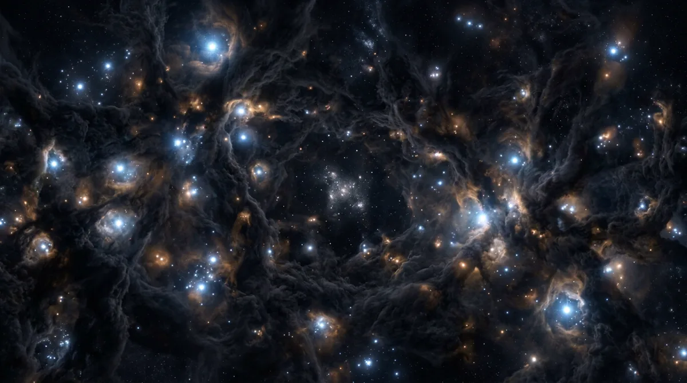

do primeiro instante à Via Láctea
Janeiro
O mês mais cheio fora de dezembro, e o que menos se enxerga.
O que se consegue datar do primeiro instante e o que ninguém sabe, a luz mais velha que dá pra ver, as primeiras estrelas, que até hoje ninguém observou, a galáxia mais distante já medida e o começo da Via Láctea.
1 de 5 episódios
Ver episódio